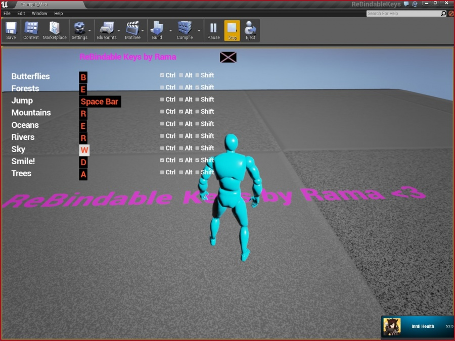
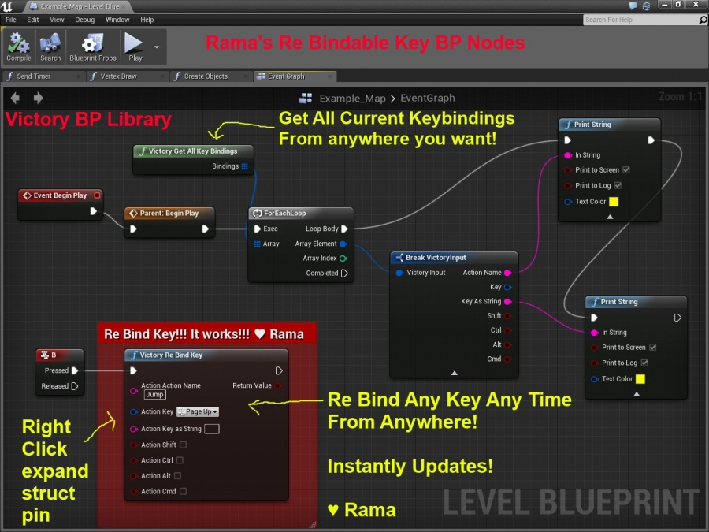

Rebinding Keys At Runtime in Packaged Game
Contents
Overview
Author ( )
Dear Community,
Full Project Release For You
I have composed a full sample project that uses my Victory BP Library plugin nodes to create a fully rebindable keys menu in UE4!
With this menu you can simply click on the names of keys next to their related actions, and then press a key to rebind!
My input system tracks Ctrl Alt Shift and Command as well.
So you can simply click, then hold CTRL and press R to bind any action to Ctrl R !
And it saves to disk immediately and rebinds the input so that the keybind is instantly updated during runtime!
Rama's Re-Bindable Keys Complete Sample Project For You

BP Node Overview
I have succeeded in rebinding keys at runtime in a packaged game for use with a UMG Key Rebinding menu!
I have provided you with the Blueprint nodes in my Victory BP Library!

Victory BP Library
Pic
My C++ Code
I spent several hours to research how to do this in the UE4 code base.
Here's the core C++ code I wrote!
The whole source code is in my Victory BP Library download!
Enjoy!
bool UVictoryBPFunctionLibrary::VictoryReBindKey(FVictoryInput Action)
{
UInputSettings* Settings = const_cast<UInputSettings*>(GetDefault<UInputSettings>());
if(!Settings) return false;
TArray<FInputActionKeyMapping>& Actions = Settings->ActionMappings;
//~~~
bool Found = false;
for(FInputActionKeyMapping& Each : Actions)
{
if(Each.ActionName.ToString() == Action.ActionName)
{
UVictoryBPFunctionLibrary::UpdateActionMapping(Each,Action);
Found = true;
break;
}
}
if(Found)
{
//SAVES TO DISK
const_cast<UInputSettings*>(Settings)->SaveKeyMappings();
//REBUILDS INPUT, creates modified config in Saved/Config/Windows/Input.ini
for (TObjectIterator<UPlayerInput> It; It; ++It)
{
It->ForceRebuildingKeyMaps(true);
}
}
return Found;
}
Conclusion
Enjoy!
♥
Rama